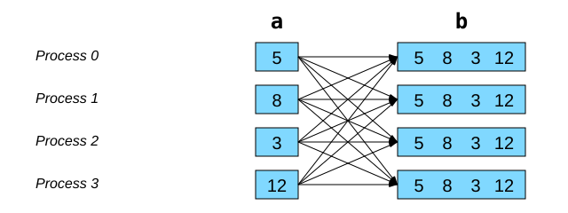
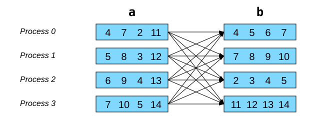

Appendix#
Other collective communications#
Gather to all with allgather#
It is the equivalent of gather + bcast, but more efficient:

With mpi4py, the code would be:
# allgather(obj: Any) -> list[Any]
b = comm.allgather(a)
Global transposition with alltoall#
It is the equivalent of scatter * gather, but more efficient:

With mpi4py, the code would be:
# alltoall(sequence_obj: Sequence[Any]) -> list[Any]
b = comm.alltoall(a)
Measuring elapsed time with MPI.Wtime()#
To precisely measure the execution time of a section of code, you can use the
MPI.Wtime() function, which returns a double-precision time value in
seconds. To calculate the elapsed time, simply call the function twice and
calculate the difference between the returned values. Typically, a single
process performs this calculation.
if rank == 0:
t1 = MPI.Wtime()
# Parallel computing and communications
if rank == 0:
t2 = MPI.Wtime()
print(f'Elapsed time = {t2 - t1:.6f} sec')
Advanced concepts#
The mpi4py library has other interesting features for optimizing
communications and for adapting to problems where the computational
portions are unequal.
Communications with NumPy arrays#
In the workshop chapters, the communication functions used relied on
serializing and reconstructing objects via the pickle module to transfer
data. However, for sending NumPy arrays, this serialization step is
unnecessarily lengthy, as the data is already uniform and lacks complex
structures. Furthermore, MPI is already designed to transfer standard data
arrays (integers or floating-point numbers). So, how can we leverage this?
To enable more efficient communications with NumPy arrays, the mpi4py
library provides several methods equivalent to those we have seen, except that
their names begin with a capital letter:
Here is a code snippet adapted from the Broadcasting a NumPy array example:
if rank == 0:
my_array = np.arange(1000, dtype='i')
else:
my_array = np.empty(1000, dtype='i')
# Process 0 sends its my_array to the others
comm.Bcast(my_array, 0)
Note that the receiving array must be constructed beforehand before calling the
Bcast() method.
For more examples, see the complete tutorial.
Collective communications with unequal portions#
The collective communication functions seen so far sent the same number of
elements for each MPI process. With mpi4py, NumPy arrays can be split or
rebuilt with a different number of values for each process:
The two main methods are: MPI.Comm.Scatterv and MPI.Comm.Gatherv.
These methods do not automatically account for the internal storage of NumPy arrays; they assume a contiguous sequence of data in memory. Therefore, the internal storage of the NumPy array must be planned: in C mode, the values of a 2D matrix are stored row by row, while in Fortran mode they are stored column by column.
See also the examples in
~/mpi201-main/lab/scatterv.
MPI in other programming languages#
C and Fortran: the MPI standard is already defined in these languages.
C++:
MPI 3.0 has eliminated C++ bindings.
Boost MPI: a practical and very powerful library for C++ developers.
Boost-MPI lunchtime conference (in French).
boost::mpi::environment env(argc, argv); boost::mpi::communicator world; std::string s; if (world.rank() == 0) world.recv(boost::mpi::any_source, 746, s);
Additional parallelization challenges#
The following codes already work in sequential mode. Now it’s up to you to parallelize them with MPI:
To measure the execution time of a program, the time srun command must be
in a job script
submitted with the sbatch command:
#!/bin/bash
#SBATCH --ntasks=4
#SBATCH … # time, memory, etc.
time srun ./program